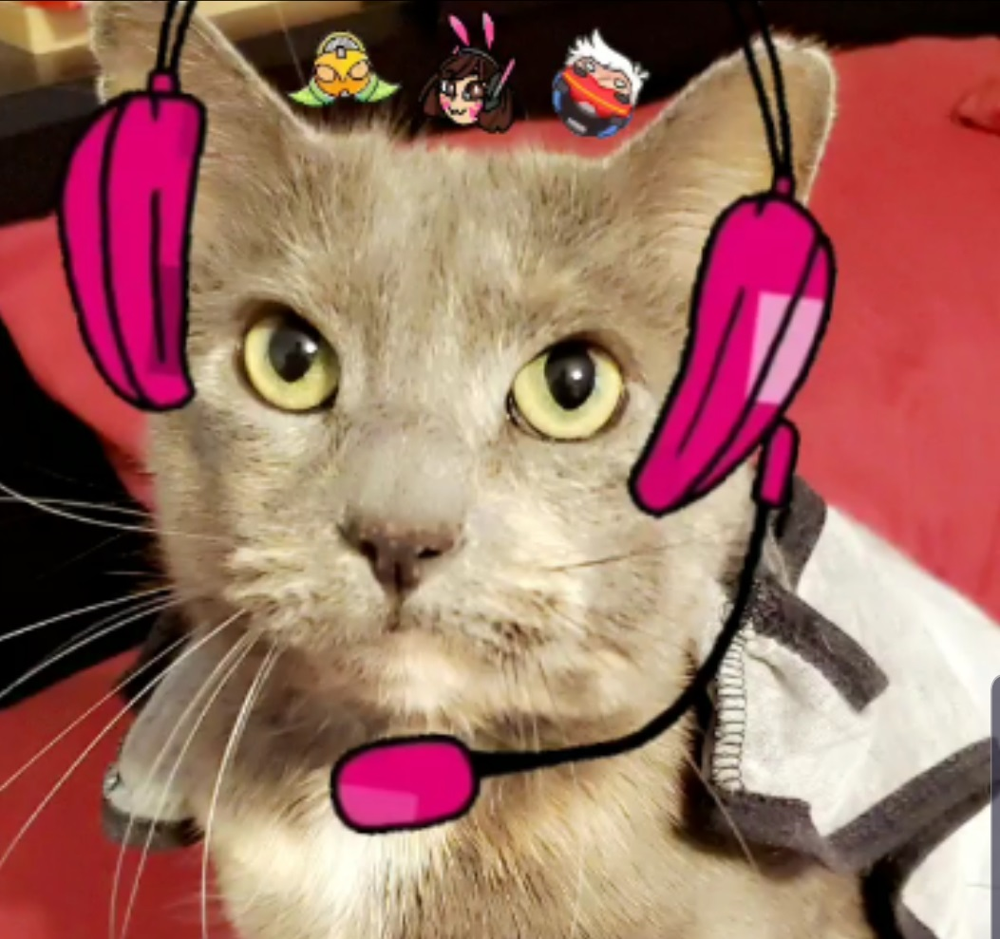

Dolly, the Destroyer of Worlds

Current games Dolly the Destroyer is winning at:
Dolly's Thoughts:
Baldur's Gate 3: I think that worm might be a slight problem.
Destiny 2: I am enjoying Void Warlocks.
REPO: I hate that witchy lady!

Baldur's Gate 3: I think that worm might be a slight problem.
Destiny 2: I am enjoying Void Warlocks.
REPO: I hate that witchy lady!